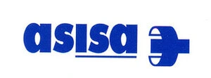
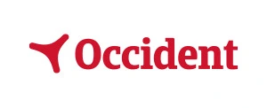
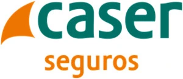

Mútues dentals a Girona
Col·laborem amb les principals asseguradores per facilitar-te l'accés als nostres tractaments dentals.
- 
- 
- 
No saps si la teva mútua cobreix el tractament?
Contacta amb el nostre equip i t'informarem sense compromís sobre les cobertures i avantatges de la teva assegurança dental. T'ajudem a gestionar tot el procés de manera ràpida i fàcil.
FAQs
Quins tractaments dentals cobreixen les mútues?
Depèn de cada asseguradora i del tipus de pòlissa. En general, les mútues solen cobrir revisions, neteges, extraccions senzilles, radiografies i urgències. Altres tractaments com blanquejaments, ortodòncia o implants acostumen a tenir descomptes o tarifes reduïdes, però no sempre estan inclosos al 100 %.
Puc venir a la clínica si la meva mútua no hi treballa directament?
Sí. Pots venir igualment com a pacient particular, i el nostre equip t'informarà de les tarifes i possibles descomptes. En alguns casos, fins i tot pots sol·licitar reemborsament parcial a la teva asseguradora.
Cal autorització prèvia de la mútua per fer tractaments?
Només en alguns casos concrets. Tractaments més complexos, com endodòncies, pròtesis o ortodòncia, poden requerir autorització prèvia o un pressupost validat per la mútua. El nostre equip t’ajuda a tramitar-ho si és necessari.
Com puc saber si la meva assegurança cobreix un tractament concret?
El més recomanable és consultar directament la teva pòlissa o contactar amb la mútua. Si ho prefereixes, nosaltres podem verificar la teva cobertura i explicar-te quins serveis estan inclosos o amb descompte.
Les mútues cobreixen tractaments d'estètica dental?
En la majoria dels casos, els tractaments purament estètics (com el blanqueig o les carilles) no estan coberts totalment per les mútues, encara que sovint ofereixen tarifes especials o descomptes per a assegurats.
Puc combinar la meva mútua amb altres assegurances o beneficis?
Sí, sempre que les assegurances ho permetin. Algunes persones tenen dues pòlisses o beneficis laborals que poden complementar la cobertura. El nostre equip pot revisar el teu cas i ajudar-te a aprofitar al màxim les teves opcions.